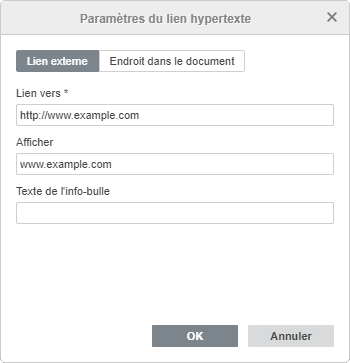
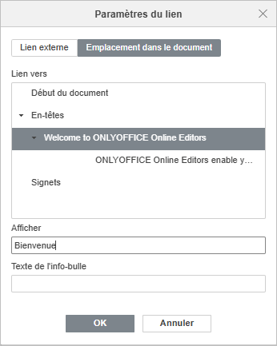

Ajouter des liens
Pour ajouter un lien hypertexte dans l'éditeur de documents,
- Sélectionnez l'élément que vous souhaitez afficher en tant que lien, ç-à-d un fragment du texte, une image ou un groupe d'objets.
- Passez à l'onglet Insertion ou Références de la barre d'outils supérieure.
- Cliquez surl'icône Lien de la barre d'outils supérieure.
- La fenêtre Paramètres du lien s'affiche ensuite et vous pouvez paramétrer le lien:
- Sélectionnez le type du lien à ajouter:
Utilisez l'option Lien externe et saisissez l'URL au format
http://www.example.comdans le Lien vers champ ci-dessous si vous souhaitez ajouter un lien menant vers un site externe. S'il vous faut ajouter un lien vers un fichier local, saisissez l'URL au formatfile://path/Document.docx(sous Windows) oufile:///path/Document.docx(sous macOS et Linux) dans le champ Lien vers.Il est possible d'ouvrir le lien hypertexte au format
file://path/Document.docxoufile:///path/Document.docxuniquement dans l'éditeur de bureau. Dans l'éditeur web, vous ne pouvez qu'ajouter le lien sans pouvoir l'ouvrir.
Utilisez l'option Emplacement dans le document et sélectionnez l'un des en-têtes disponibles dans le texte ou l'un des signets, si vous souhaitez ajouter un lien hypertexte vers un emplacement dans le même document.

- Afficher - saisissez le texte qui devient la zone cliquable renvoyant vers l'adresse spécifiée ci-dessus.
- Texte de l'info-bulle - saisissez le texte qui sera visible dans une petite fenêtre contextuelle offrant une courte note ou étiquette lorsque vous placez le curseur sur un lien.
- Sélectionnez le type du lien à ajouter:
- Cliquez sur OK.
Pour ajouter un lien hypertexte, vous pouvez également utiliser la combinaison des touches Ctrl+K ou cliquer avec le bouton droit sur l'emplacement où le lien hypertexte sera ajouté et sélectionner l'option Lien du menu contextuel.
Il est également possible de sélectionner un caractère, un mot, une phrase avec le pointeur de la souris ou à l'aide du clavier, et ouvrir la fenêtre Paramètres du lien hypertexte selon les instructions ci-dessus. Dans ce cas-ci le texte fragment sélectionné sera ajouté dans le champ Afficher.
Placez le curseur sur le lien hypertexte ajouté pour afficher le texte de l'info-bulle que vous avez ajouté. Vous pouvez suivre le lien en appuyant sur la touche Ctrl et en cliquant sur le lien dans votre document.
Pour modifier ou supprimer le lien ajouté, cliquez sur celui-ci avec le bouton droit de souris, sélectionnez l'option Lien et ensuite sélectionnez l'opération nécessaire - Modifier le lien ou Supprimer le lien.